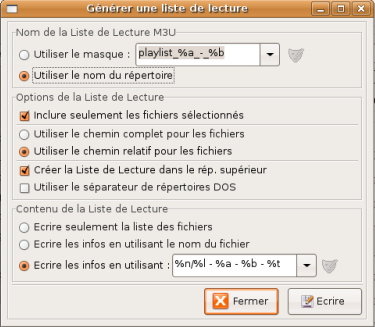
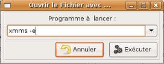
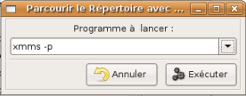

Guide de l'utilisateur du logiciel EasyTAG (version 1.99.11)
- chapitre 6 et 7 -
Table des matières.
Dans EasyTAG vous avez la possibilité de créer une liste de lecture de type m3u directement utilisable par un lecteur de fichiers audio externe (WinAmp, Xmms, Totem …)
Cette fonction est accessible depuis le menu «Divers» (voir le paragraphe 2.1.4). La fenêtre correspondante est présentée ci-contre.

Pour que la liste de lecture ne contienne seulement que les fichiers sélectionnés, il faut faire attention que la case Inclure seulement les fichiers sélectionnés soit bien cochée. En effet, si cette case n'est pas cochée, la liste de lecture comprend alors l'ensemble de tous les fichiers audio présents dans le répertoire courant (ce qui peut représenter un nombre important de fichiers).
De plus, nous voyons que deux options font appel à certains codes (%a, %b, …). Ces codes sont les mêmes que ceux utilisés pour la fonction scanner (voir, par exemple, paragraphe 4.2). La signification des quelques codes visibles sur la figure est donnée dans le tableau ci-dessous.
| Code | Champ du tag |
|---|
| %a | Artiste |
| %b | Album |
| %n | Numéro de piste |
| %l | Nbre total de pistes |
| %t | Titre |
Une fois les différentes options choisies, il suffit, pour créer la liste de lecture, de cliquer alors sur le bouton «Ecrire».
EasyTAG permet la lecture des fichiers audio grâce au lancement depuis le logiciel d'une application externe de lecture de fichiers audio. Ceci peut être réalisé de trois façons différentes :
- Lancer Lecteur Audio : Cette entrée du menu «Divers» (voir le paragraphe 2.1.4) permet de lancer le lecteur audio par défaut. Ce lecteur peut être défini dans l'onglet «Divers» du menu «Préférences» (voir le paragraphe 2.1.5).

- Ouvrir le(s) Fichier(s) avec … : Cette entrée du menu «Fichier» (voir le paragraphe 2.1.1) ouvre une fenêtre (voir figure ci-contre) qui permet de saisir l'application externe à lancer. Cette application traite l'ensemble des fichiers audio sélectionnés. Pour lancer l'application, il faut cliquer sur le bouton «Exécuter».
Dans le cas présent, l'application lancée 'Xmms -e' permet d'écouter les fichiers sélectionnés avec Xmms. De plus, l'option choisie permet de placer ces fichiers à la suite des fichiers audio déja en écoute.

- Parcourir le Répertoire avec … : Cette entrée du menu «Sélecteur» (voir le paragraphe 2.1.2) ouvre une fenêtre (voir figure ci-contre) qui permet de saisir l'application externe à lancer. Cette application traite l'ensemble des fichiers audio présents dans le répertoire courant. Pour lancer l'application, il faut cliquer sur le bouton «Exécuter».
Dans le cas présent, l'application lancée 'Xmms -p' permet d'écouter tous les fichiers avec Xmms.
Pour fonctionner, EasyTAG doit disposer des librairies suivantes :
- GTK 2.4,
- id3lib pour les fichiers MP3,
- libogg,
- libvorbis pour les fichiers Ogg Vorbis,
- libFLAC (en complément de libogg and libvorbis) pour les fichiers FLAC Vorbis,
- mpeg4ip pour les fichiers MP4.
- RETOUR A LA TABLE DES MATIERES -